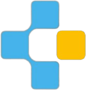

<mat-sidenav-container class="sidenav-container">
  <mat-sidenav
    #drawer
    class="sidenav"
    fixedInViewport
    [attr.role]="(isHandset$ | async) ? 'dialog' : 'navigation'"
    [mode]="(isHandset$ | async) ? 'over' : 'side'"
    [opened]="(isHandset$ | async) === false"
  >
    <mat-toolbar class="logo_navigation">
      
      <span class="logo_head">Eminence</span>
      <div class="icon_back" (click)="drawer.toggle()" (click)="toggleMenu()">
        
      </div>
    </mat-toolbar>
    <div class="navigation_links">
      <a routerLink="/eminence/admin/package" routerLinkActive="activelink">Package</a>
      <a routerLink="/eminence/admin/institution" routerLinkActive="activelink">Institution</a>
      <a routerLink="/eminence/admin/topic" routerLinkActive="activelink">Topic</a>
      <a routerLink="/eminence/admin/role" routerLinkActive="activelink">Role</a>
      <a routerLink="/eminence/admin/user" routerLinkActive="activelink">User</a>
    </div>
  </mat-sidenav>
  <mat-sidenav-content>
    <mat-toolbar>
      <button
        type="button"
        aria-label="Toggle sidenav"
        mat-icon-button
        (click)="drawer.toggle()"
        (click)="hideMenu()"
        *ngIf="showToggleButton || (isHandset$ | async)"
      >
        <mat-icon aria-label="Side nav toggle icon">menu</mat-icon>
      </button>
      <span class="welcome_user">Welcome {{firstName}}</span>
      <mat-icon class="user_account" (click)="logout()" style="cursor: pointer">account_circle</mat-icon>
    </mat-toolbar>
    <!-- Child routes for admin, faculty, vetter and Registered User -->
    <div class="route_container">
      <router-outlet></router-outlet>
    </div>
  </mat-sidenav-content>
</mat-sidenav-container>
